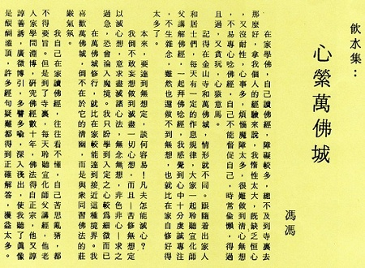
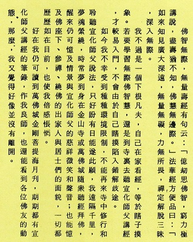

心萦万佛城
冯冯
在家学佛，自己读佛经，障碍较多，总不及到寺里去那么好，拿我个人的经验来说，我惰性太大，既缺乏恒心，又没耐性，心事多，烦恼魔障太多，很难做到清心无想，不易专心念佛经，自己不能督促自己，时常偷懒，得过且过，又贪玩，心猿意马。
记得在金山寺和万佛城，情形就不同。跟随着出家人和居士们，每天有一定的作息规律，大家一起聆听宣化师父讲解佛经，一 起拜佛念经，我感觉到心中十分虔诚专注，不生杂念，虽然也还做不到无想，也就比在家自修好得太多了。
本来，要达到无想定，谈何容易！凡夫怎能灭心？
我倒不敢妄想做到灭尽一切心想！而且──苦修无想定以灭心想，意求尽灭诸心法，无念无想，非色非心──求之过急，恐会沦入魔境。我只盼学到入定之心较为细微而已。
在万佛城修行，就比在家较能达到接近这种境界。我喜欢万佛城，倒不在于它的清幽，而是与众同习佛法的庄严气氛。
我自己在家读佛经，往往看不懂，自己苦思乱猜，都不得要旨。但是到了寺里，每天聆听宣化师父讲经，他老人家学问渊博，研究佛经数十年，佛法得自正宗，他又谆谆善诱，广征博引，多譬多喻，深入浅出，使我听了真像是醍醐灌顶，许多经句疑难都得到正确解答，获益太多。
佛智无际，无量寿经有句云：“亿劫思怫智，穷力极讲说，尽寿犹不知，佛慧无边际。”法华经方便品曰：“如来知见广大深远，无量无碍，力无所畏，禅定解脱三昧，深入无际。”
我不过是一个下根凡夫，自己在家看经，等于瞎子摸象。若要学习无际佛智慧，还是到寺里去听宣化师父讲经 ，才较易入门，不会由于自己瞎摸陷入错解歧途。
如今我不幸受到种种环境限制，不能再来寺中修行和聆听宣化师父说法，只好盼有日能遂此愿，我远隔千里，梦魂萦绕，时常梦到身在金山寺或万佛城随众听经拜佛，醒来仍可忆及情景与宣化师父的慈祥微笑和声音；也能忆及佛座下、参禅、绕佛的出家人与居士们的面貌，一切都历历如在目前，也使我倍感怅惘。
好在我仍可读到万佛城金刚菩提海月刊，期期都有宣化师父讲经的笔录，作我良师，也还能看到各位佛友的动态，那么，我又觉得好像并没有离开。


原载万佛城《金刚菩提海》第134期：1981年07月1日
转贴来源：万佛城《金刚菩提海》